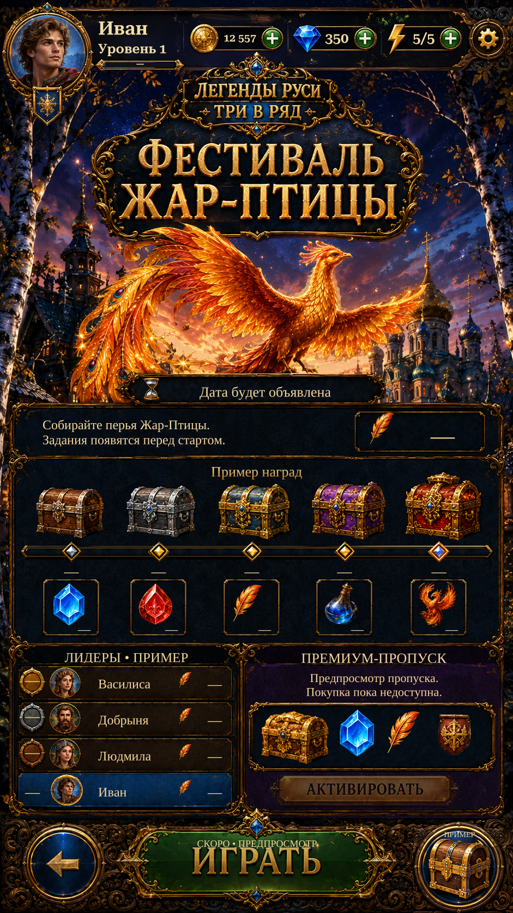

Actual Unity implementation: continuous progress track with intact caps, one correctly isolated diamond per milestone, and complete panel curves without rectangular corner patches. Approved shared gems/boosters and Home gift remain. The channel is empty because event progress is unavailable; reference sample progress is not presented as live data.
The shared Home header/background remain. Event dates, counts, thresholds and scores are unconfirmed and shown as unavailable. Rewards and leaderboard are previews; Play and Activate are disabled. English uses localized live lettering.

Actual Unity Play Mode capture; isolated test save and simulated screen/safe area.
Implementation and verification · Remaining differences · Implemented progress close-up · Progress asset alpha · Panel frame alpha